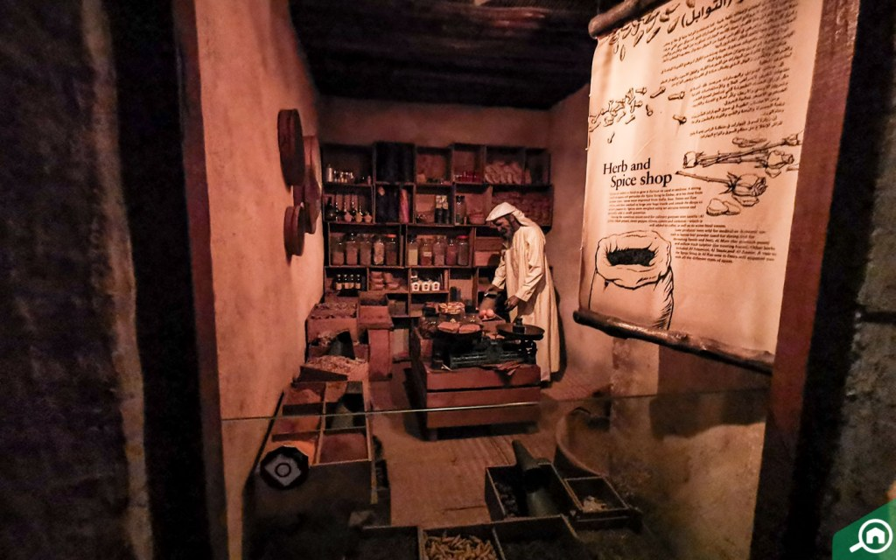
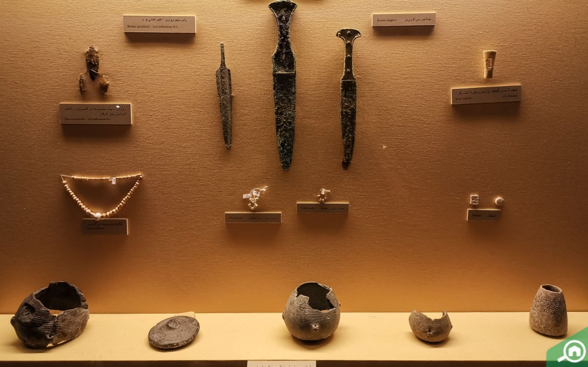
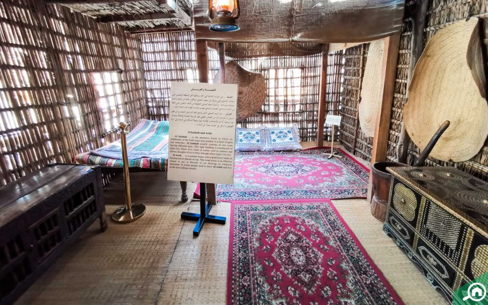

Dubai Museum is the main museum in Dubai, United Arab Emirates. It is located in the Al Fahidi Fort built in 1787 and is the oldest existing building in Dubai. The museum was opened by the Ruler of Dubai in 1971, with the aim of presenting the traditional way of life in the Emirate of Dubai. When entering, one can see the fort constructed and the various displays that go along with it. From the fort, there is a path to the galleries, which display the general culture of the land, especially in the 1800s. It includes local antiques as well as artifacts from African and Asian countries that traded with Dubai. It also includes several dioramas showing life in the emirate before the advent of oil, in addition to artifacts from recent discoveries as old as 3000 BC. In 2007, Dubai Museum received 1,800 visitors daily, with a yearly total of 611,840. In March 2008, the museum had 80,000 visitors. The most popular times are from August to April.The museum received over 1 million visitors in 2013.The total area of Dubai museum is 4,000 square meters.
There is no denying that the shopping malls in Dubai are some of the best in the world but have you considered how shopping was like in the early 1950s? The Dubai Museum has an entire market wing with life-size displays of stores and tradesmen in an old market in Bur Dubai. A single step onto this gallery will take you back in the 1950s where you can see the vendors at different stores buying and selling merchandise.
The monuments wing has different displays housing ancient weapons, tombs, urban communities and pottery. You will learn here how people in Dubai lived, fought and went through their everyday life in the desert in the past. The pottery collection includes different hand-made utensils for cooking, items used for food preservation and water storage. You can even see the items that were used for the transportation of goods and food items.
A visit to the museum reveals different phases of life in Dubai, before and after the oil boom. The exhibits in the Dubai Museum elaborate on how the city progressed over the years based on a deeply rooted civilisation. The museum houses original antiques such as pottery, weapons and tombs. You also get to explore different wings reflecting the atmosphere of the markets and traditional homes from the past.